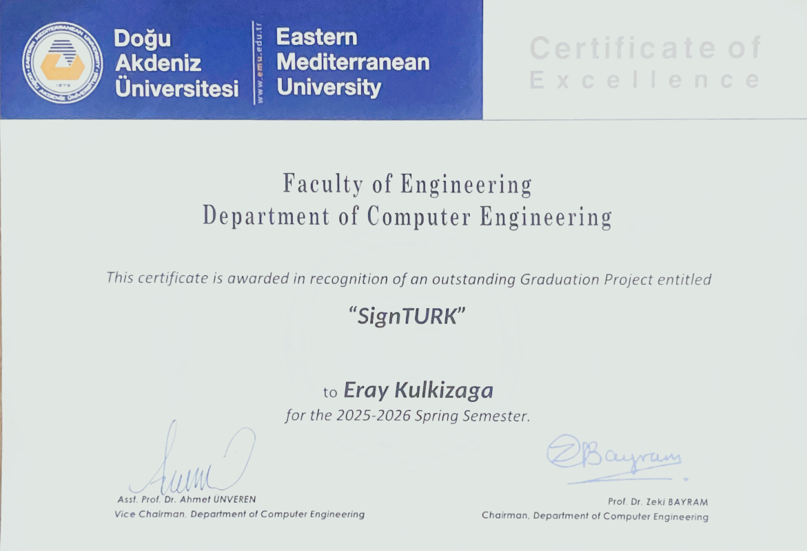

Outstanding Project Award
The Faculty of Engineering, Department of Computer Engineering recognized SignTurk as an outstanding graduation project for the Spring Semester. The award highlights the project’s engineering depth, product scope, and accessibility impact.
